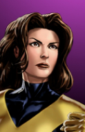

Selecione um personagem
-

-

- 
-

-

-

-

-


Ciclope
Um acidente aconteceu com ele quando criança, agora Ciclope é um mutante, possuindo o poder de projetar pura energia de seus olhos de cor vermelho-rubi, consegue manter seus poderes controlados por meio de um oculos especial.

Jean Grey
Jean Grey é uma mutante nível ômega e o principal avatar da Força Fênix, no qual manifesta poderes cósmicos. A telepatia, telecinese e empatia de Jean são drasticamente aumentadas quando em contato com a Fênix, além de poder viajar no vácuo do espaço que vai além da velocidade da luz

Lince Negra
Lince Negra é o codinome de Kitty Pryde. Ela tem o poder de Intangibilidade. Atravessar qualquer coisa.
Magneto
Magneto foi recentemente reclassificado como um mutante de nível ômega, seus poderes são incrivelmente vastos. Ele pode controlar e manipular campos magnéticos que vão muito além da habilidade de controlar metal

Noturno
Seus poderes mutantes incluem teletransporte, super agilidade, aderência física, visão noturna, habilidades acrobáticas e a habilidade de fundir-se com as sombras. Noturno é um mutante com a habilidade para teleportar a si mesmo, roupas usadas e uma certa quantia de massa adicional com qual entra em contato.

Tempestade
Ela é capaz de manipular o tempo, e alterar o clima, assim tendo influência sobre os elementos da natureza. Pode alterar a pressão atmosférica a Temperatura e Umidade. É capaz de controlar os elementos climáticos, criar chuvas, tempestades, trovões, relâmpagos, raios, tornados, neve, neblina, etc.

Vampira
Vampira é integrante (e as vezes líder) de algumas equipes dos X-Men e dos Vingadores. Sua primeira aparição foi em The Avengers Annual número 10 de 1981, e seu poder mutante é a habilidade de absorver a vitalidade, memórias, habilidades e poderes de outros seres vivos através do contato com a pele.

Wolverine
Poderes e habilidades: Além de suas mortais garras de adamantium, capazes de cortar qualquer coisa, ele tem um poderoso fato de cura; envelhece lentamente – o que o torna praticamente imortal e tem diversas características animais, como sentidos muito aguçados